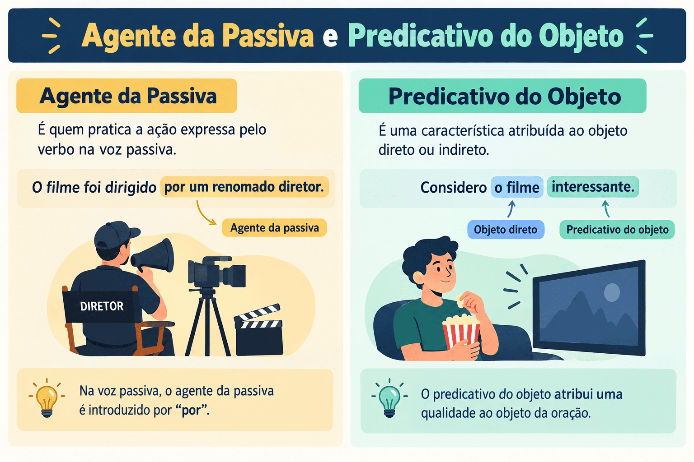

Agente da Passiva e Predicativo do Objeto: Conceitos, Diferenças e Análise Sintática
A análise sintática da Língua Portuguesa exige atenção redobrada ao comportamento dos termos que orbitam em torno do verbo e de seus complementos. Enquanto alguns termos apenas delimitam circunstâncias ou especificam substantivos, o agente da passiva e o predicativo do objeto desempenham papéis estruturais decisivos: o primeiro revela quem executa a ação sofrida pelo sujeito na voz passiva analítica, e o segundo atribui um estado, qualidade ou característica transitória ao complemento verbal.
Em avaliações como vestibulares tradicionais (como o PAES UEMA), o ENEM e concursos públicos concorridos, as bancas costumam explorar as semelhanças e pegadinhas entre esses termos e outras funções sintáticas de estrutura similar. É muito comum, por exemplo, candidatos confundirem o predicativo do objeto com um adjunto adnominal, ou o agente da passiva com um adjunto adverbial de causa ou de instrumento.
Neste guia completo do Mestre Kira, você aprenderá as definições formais do agente da passiva e do predicativo do objeto, as preposições que os regem, as técnicas práticas para diferenciar o predicativo do adjunto adnominal, o impacto direto dessa classificação na formação do predicado verbo-nominal e resolverá um quiz de 10 questões com gabarito comentado.

O que é Agente da Passiva?
O agente da passiva é o termo da oração que, em uma estrutura de voz passiva analítica, pratica a ação verbal sofrida ou recebida pelo sujeito paciente.
Classificado sintaticamente como um termo integrante da oração, o agente da passiva é introduzido obrigatoriamente por preposição. Ele corresponde rigorosamente ao sujeito agente da oração correspondente na voz ativa.
Voz Ativa: [Sujeito Agente] + [Verbo Ativo] + [Objeto Direto]
Voz Passiva: [Sujeito Paciente] + [Verbo Auxiliar + Particípio] + [Agente da Passiva]
O romance histórico foi escrito por Aluísio Azevedo.
- O romance histórico: sujeito paciente (recebe a ação verbal);
- foi escrito: locução verbal passiva (auxiliar ser + particípio de escrever);
- por Aluísio Azevedo: agente da passiva (termo preposicionado que pratica o ato de escrever);
- conversão para voz ativa: “Aluísio Azevedo escreveu o romance histórico”.
Atenção à preposição: O agente da passiva é introduzido habitualmente pela preposição por (ou pelas contrações pelo, pela, pelos, pelas) e, em construções mais raras de cunho literário, pela preposição de (ex.: “A montanha estava cercada de densa neblina” → equivalente a por densa neblina).
Agente da Passiva vs. Adjunto Adverbial de Causa/Instrumento
Uma das armadilhas mais frequentes em provas reside na confusão entre o agente da passiva e um adjunto adverbial introduzido pela preposição por:
Agente da Passiva
As árvores foram derrubadas pelo lenhador.
“Pelo lenhador” pratica ativamente a ação de derrubar; admite conversão imediata para a ativa: “O lenhador derrubou as árvores”.
Adjunto Adverbial
As árvores foram derrubadas pela tempestade.
Embora a tempestade tenha causado a queda, trata-se de um agente inanimado causal. No exemplo: “Ele foi ferido com uma faca”, “com uma faca” é adjunto adverbial de instrumento, e não agente da passiva.
Lembre-se: na voz passiva sintética (com o pronome se apassivador, como em “Vendem-se apartamentos”), o agente da passiva não costuma aparecer explícito na norma culta. Ele é uma marca típica da voz passiva analítica.
O que é Predicativo do Objeto?
O predicativo do objeto (PO) é o termo da oração que atribui um estado, qualidade, característica ou condição transitória ao objeto direto ou ao objeto indireto.
Essa atribuição de qualidade ocorre por intermédio do verbo da oração (chamado de verbo transobjetivo), o qual indica que a característica foi percebida, conferida, considerada ou julgada pelo sujeito em relação ao objeto.
Os estudantes consideraram a prova difícil.
- Os estudantes: sujeito da oração;
- consideraram: verbo transitivo direto;
- a prova: objeto direto;
- difícil: predicativo do objeto direto (qualidade/julgamento atribuído ao objeto “a prova”).
A comunidade chamava-lhe de benfeitor.
- chamava: verbo transitivo indireto;
- -lhe: objeto indireto (a ele);
- de benfeitor: predicativo do objeto indireto (introduzido pela preposição facultativa “de”).
Predicativo do Objeto vs. Adjunto Adnominal
A diferenciação entre o predicativo do objeto e o adjunto adnominal é o ponto mais complexo e mais exigido pelas bancas de concursos e vestibulares.
Enquanto o adjunto adnominal é uma característica inerente, permanente ou intrínseca ao substantivo (fazendo parte indivisível do sintagma nominal do objeto), o predicativo do objeto expressa uma atribuição circunstancial, temporária ou decorrente da ação verbal.
| Critério de Análise | Adjunto Adnominal (AA) | Predicativo do Objeto (PO) |
|---|---|---|
| Natureza da característica | Inerente, permanente ou especificadora | Circunstancial, temporária ou atribuída pelo sujeito |
| Relação com o verbo | Não depende do verbo; liga-se diretamente ao substantivo | Intermediada pelo verbo (atribuição por meio da ação) |
| Teste de substituição pronominal | O termo acompanha o pronome (é substituído junto) | O termo permanece isolado após a substituição pronominal |
| Teste da voz passiva | Acompanha o sujeito paciente | Transforma-se em predicativo do sujeito |
Teste Prático 1: Substituição pelo Pronome Oblíquo
Ao substituir o objeto direto pelo pronome correspondente (o, a, os, as):
- Se o termo for adjunto adnominal, ele desaparece junto com o substantivo substituído;
- Se for predicativo do objeto, ele se mantém na frase após o pronome.
Com Adjunto Adnominal
“O homem comprou o carro antigo.”
Substituição pronominal: “O homem comprou-o.”
O termo “antigo” foi englobado pelo pronome “o”. É adjunto adnominal.
Com Predicativo do Objeto
“O homem julgou o carro antigo.”
Substituição pronominal: “O homem julgou-o antigo.”
O termo “antigo” permaneceu na oração para qualificar o pronome “o”. É predicativo do objeto.
Teste Prático 2: Conversão para a Voz Passiva Analítica
Ao transpor a oração ativa para a voz passiva analítica:
- O adjunto adnominal continua colado ao núcleo do sujeito paciente;
- O predicativo do objeto converte-se em predicativo do sujeito.
Voz ativa: O juiz declarou o réu culpado. (culpado = Predicativo do Objeto)
Voz passiva: O réu foi declarado culpado pelo juiz. (culpado = Predicativo do Sujeito)
Verbos que costumam pedir Predicativo do Objeto: verbos que exprimem nomeação, julgamento, transformação, percepção ou escolha, como: chamar, julgar, considerar, declarar, eleger, nomear, achar, tornar, deixar.
O Impacto no Tipo de Predicado: Predicado Verbo-Nominal
A presença do predicativo do objeto altera diretamente a classificação sintática do predicado da oração.
Na oração tradicional com verbo significativo (transitivo direto, indireto ou intransitivo), se houver um termo predicativo (seja ele predicativo do sujeito ou predicativo do objeto), o predicado deixa de ser puramente verbal e passa a ser classificado como predicado verbo-nominal (PVN).
Predicado Verbo-Nominal = Verbo Significativo (ação) + Predicativo (estado/qualidade)
“A notícia deixou os moradores apavorados.”
Núcleo verbal: deixou | Núcleo nominal: apavorados (predicativo do objeto)
Classificação sintática completa:
“Os eleitores elegeram a candidata presidente.”
- Os eleitores: sujeito simples;
- elegeram: verbo transitivo direto (núcleo verbal do predicado);
- a candidata: objeto direto;
- presidente: predicativo do objeto direto (núcleo nominal do predicado);
- predicado: verbo-nominal (elegeram a candidata presidente).
Quadro Síntese: Agente da Passiva vs. Predicativo do Objeto
| Termo Sintático | Papel Semântico | Exigência Estrutural | Exemplo Típico |
|---|---|---|---|
| Agente da Passiva | Pratica a ação recebida pelo sujeito paciente | Ocorre na voz passiva analítica, introduzido por por ou de | O livro foi lido pelos estudantes. |
| Predicativo do Objeto | Atribui estado ou qualidade transitória ao objeto | Ocorre com verbos transobjetivos de julgamento, mudança ou escolha | A crítica julgou a peça inovadora. |
Passo a passo para identificar os termos em provas
-
A oração está na voz passiva com locução verbal (ser + particípio)?
- Localize o termo preposicionado que pratica a ação: trata-se do agente da passiva (ex.: “O muro foi pintado pelo operário”).
- Teste a voz ativa: “O operário pintou o muro”. Confirmado!
-
A oração possui verbo que expressa julgamento, mudança ou escolha (achar, julgar, considerar, tornar, declarar)?
- Localize o objeto e verifique se há um adjetivo ou substantivo atribuído a ele por intermédio da ação verbal.
- Faça o teste da substituição pelo pronome oblíquo: se a qualidade permanecer isolada após o pronome (“Considerei-o inapto”), trata-se de predicativo do objeto.
Quiz — Agente da Passiva e Predicativo do Objeto
Questão 1 — Em “A cidade foi destruída pelo temporal durante a madrugada”, o termo sublinhado (“pelo temporal”) desempenha a função de:
Questão 2 — Na frase “Os avaliadores consideraram o projeto inovador”, a palavra “inovador” é classificada como:
Questão 3 — Assinale a oração que apresenta predicado VERBO-NOMINAL decorrente da presença de um predicativo do objeto:
Questão 4 — Em “A casa estava cercada de soldados”, o termo “de soldados” exerce a função sintática de:
Questão 5 — Compare: I. “Comprei um casaco quente”; II. “Achei o casaco quente”. Os termos destacados são, respectivamente:
Questão 6 — Transpondo a oração “O tribunal nomeou Maria coordenadora” para a voz passiva analítica, o termo “coordenadora” passa a ser:
Questão 7 — Em “O resultado do concurso deixou os candidatos apreensivos”, o termo “apreensivos” é:
Questão 8 — Em qual das seguintes frases NÃO ocorre agente da passiva?
Questão 9 — Na oração “O povo chamava ao governante de tirano”, o termo “de tirano” atua como:
Questão 10 — Em “A diretoria considerou as medidas ineficazes e revogou o decreto”, os predicados das duas orações são, respectivamente:
Resumo sobre agente da passiva e predicativo do objeto
- O agente da passiva é o termo que executa a ação sofrida pelo sujeito na voz passiva analítica.
- O agente da passiva é introduzido ordinariamente pela preposição por (pelo, pela) e, raramente, por de.
- Ao converter a voz passiva analítica para a ativa, o agente da passiva torna-se o sujeito agente.
- O predicativo do objeto atribui uma qualidade, estado ou condição temporária ao objeto direto ou indireto.
- O predicativo do objeto costuma surgir com verbos de julgamento, nomeação, mudança ou percepção (julgar, achar, considerar, tornar, declarar).
- O adjunto adnominal é qualidade permanente e é substituído junto ao pronome oblíquo; o predicativo do objeto permanece isolado após a substituição pronominal.
- Na conversão da oração para a voz passiva, o predicativo do objeto passa a funcionar como predicativo do sujeito.
- A presença de predicativo do objeto transforma a estrutura em um predicado verbo-nominal (com dois núcleos: um verbo de ação e um nome predicativo).
Conclusão
O aprofundamento no estudo do agente da passiva e do predicativo do objeto consolida a transição da análise sintática mecânica para uma compreensão refinada da sintaxe discursiva. Reconhecer a atuação desses termos evita equívocos comuns na identificação de preposições e na classificação dos predicados.
Seja para gabaritar questões em vestibulares regionais exigentes como o PAES UEMA, no ENEM ou em concursos de nível superior, o domínio dos testes de substituição e da transposição de vozes assegura total precisão sintática e capacidade analítica.
Perguntas frequentes sobre agente da passiva e predicativo do objeto
Como identificar o agente da passiva em uma oração?
Verifique se a oração está na voz passiva analítica (formada por verbo auxiliar + particípio) e localize o termo preposicionado que pratica a ação. Para confirmar, transforme a frase para a voz ativa: o termo deverá assumir o papel de sujeito da oração ativa (ex.: “A decisão foi tomada pelo juiz” → “O juiz tomou a decisão”).
O agente da passiva pode ser introduzido por outra preposição além de "por"?
Sim. Embora a preposição por (e suas contrações pelo, pela) seja a mais usual, construções clássicas e literárias admitem a preposição de, como em “A cidade estava cercada de inimigos”.
Qual o teste mais prático para diferenciar predicativo do objeto de adjunto adnominal?
Substitua o substantivo do objeto direto por um pronome oblíquo (o, a, os, as). Se a palavra sumir junto com o substantivo, é adjunto adnominal (“Comprei o livro novo” → “Comprei-o”). Se ela permanecer na frase após a substituição, é predicativo do objeto (“Achei o livro interessante” → “Achei-o interessante”).
O predicativo do objeto sempre exige predicado verbo-nominal?
Sim. Como o verbo que rege o objeto é um verbo significativo (de ação/processo) e o predicativo introduz um núcleo nominal de qualidade, a oração passa a apresentar dois núcleos informativos, caracterizando o predicado verbo-nominal.
Pode existir predicativo do objeto indireto?
Sim, embora seja menos comum. Ocorre principalmente com verbos de chamamento, nomeação ou qualificação como chamar, apelidar, acompanhados de complemento indireto (ex.: “A multidão chamava-lhe de herói”).
Conteúdos relacionados
- Termos Integrantes e Acessórios da Oração
- Orações Coordenadas e Subordinadas: como reconhecer e classificar
- Conjunções da Língua Portuguesa: o que são, tipos, usos e exemplos explicados
- Locuções Adverbiais: o que são, tipos e exemplos
- Sintaxe: estrutura da oração e relações entre as palavras
- Interpretação e Produção Textual
- Gramática da Língua Portuguesa: Guia Completo
- Conteúdos de Gramática — Página 2
- Conteúdos de Gramática — Página 3
- Conteúdos de Gramática — Página 4
Referências bibliográficas
- BECHARA, Evanildo. Moderna Gramática Portuguesa. 37. ed. Rio de Janeiro: Nova Fronteira, 2009.
- CEGALLA, Domingos Paschoal. Novíssima Gramática da Língua Portuguesa. 48. ed. São Paulo: Companhia Editora Nacional, 2008.
- CUNHA, Celso; CINTRA, Lindley. Nova Gramática do Português Contemporâneo. 6. ed. Rio de Janeiro: Lexikon, 2013.
- GARCIA, Othon Moacyr. Comunicação em Prosa Moderna. 27. ed. Rio de Janeiro: Editora FGV, 2010.
- ROCHA LIMA, Carlos Henrique da. Gramática Normativa da Língua Portuguesa. 49. ed. Rio de Janeiro: José Olympio, 2011.
Explore Outros Conteúdos
Continue seus estudos acessando outras seções do site Mestre Kira: